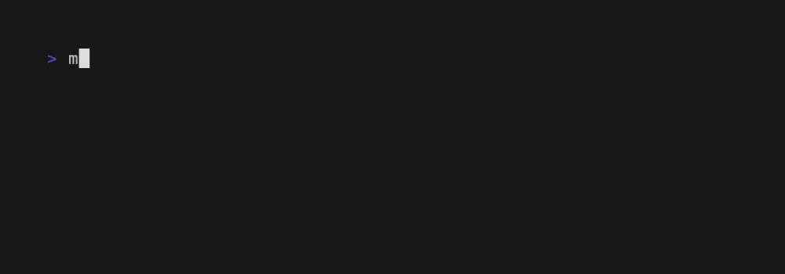
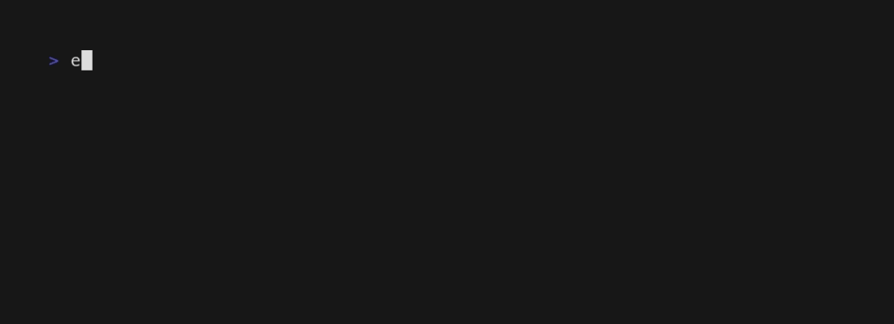
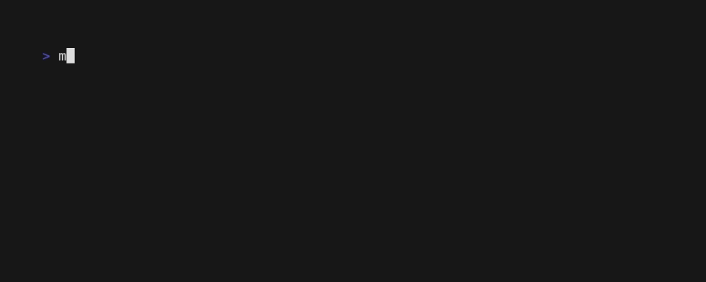

| k8s-tools | ||||||||
   |
|
|||||||
{kind=link}
Overview
This repository aggregates 20+ individual utilities for working with kubernetes into one dockerized toolchain, hosted inside a single compose file as k8s-tools.yml. It's useful for CI/CD pipelines or general development, and can be embedded alongside your existing project, which helps to fix the problem of different project developers using different local versions of things like helm, kubectl, etc.
Containers defined here aren't built from scratch, and official sources are used where possible. Low-level tools (like kubectl, helm, etc) mostly come from alpine/k8s but many other tools (like argo, knative, cdk, k9s, k3d, etc) are also included. However, this isn't an attempt to build an omnibus "do-everything" container..* it's more a response to the fact that there are a lot of diverse tools that really can't be unified, so it's better to just learn how to work with that. Tools containers are versioned independently, and pulled only when they are used.
Besides bundling some tooling, this repository is a reference implementation for a pattern that bridges compose services and Makefile targets, creating a "minimum viable automation framework" for things like orchestrating tasks across tool containers. It's expressive and flexible, yet also focused on minimizing both conceptual overhead and software dependencies. It's incredibly useful for lots of things, and whether it is a tool, a library, or a framework depends on how you decide to use it. There's 3 pieces to this, and the full triple of k8s.mk, compose.mk, and k8s-tools.yml is sometimes called the k8s-tools suite.
This reference focuses on a few use-cases in particular:
- Cluster lifecycle / development / debugging workflows in general.
- Decoupling project automation from the choice of CI/CD backend.
- Project-local kubernetes clusters & corresponding lifecycle automation using
kindork3d. - Proper separation of automation tasks from specifications for runtime / container context.
- Less shell code in general, but where we need it: it shouldn't be embedded in YAML, Jenkinsfiles, etc.
- Per-project tool-versioning, providing defaults but allowing overrides, and ensuring versions match everywhere.
- Generally modernizing & extending
makefor containers, colors, & concurrency, making it ready for the 21st Century.
There's a lot of hate for make (especially for "creative" usage of it!), but you'll find that these are not the Makefile's of your ancestors. Support for container dispatch feels like a tiny, unobtrusive DSL on top of tech you already know, and you can run it anywhere you are. Less time spent negotiating with bolted-on plugin-frameworks, hook systems, and build-bots, more time for the problems you care about. And yes, the build-bots themselves will be happy to run your automation, and the output is easy to parse. See the this repo's github actions, which bootstrap and exercise a cluster as part of the end to end tests.
Working with compose.mk and k8s.mk makes make hit different.
Beyond addressing the issues above, these tools add new capabilities to make itself, including some support for quickly building custom TUIs from dockerized components.
{kind=link}
With or without the TUI, all output is carefully curated and logged to appropriate output streams, aiming to be readable and human-friendly on stderr, while still remaining machine-friendly for downstream processing on stdout. Help not only works, it also goes beyond mere target-listing to actually include namespace and per-target documentation, rendered via a dockerized version of charmbracelete/glow.
{kind=link}
Quick Start
}
Clone/Build/Test This Repo
# for ssh
$ git clone git@github.com:elo-enterprises/k8s-tools.git
# or for http
$ git clone https://github.com/elo-enterprises/k8s-tools
# build the tool containers & check them
$ make clean build test
}
Tools via Compose CLI
$ docker compose run -f k8s-tools.yml ansible ...
$ docker compose run -f k8s-tools.yml argo ...
$ docker compose run -f k8s-tools.yml awscli ...
$ docker compose run -f k8s-tools.yml aws-iam-authenticator ...
$ docker compose run -f k8s-tools.yml cdk ...
$ docker compose run -f k8s-tools.yml dind ...
$ docker compose run -f k8s-tools.yml eksctl ...
$ docker compose run -f k8s-tools.yml fission ...
$ docker compose run -f k8s-tools.yml graph-easy ...
$ docker compose run -f k8s-tools.yml gum ...
$ docker compose run -f k8s-tools.yml helm ...
$ docker compose run -f k8s-tools.yml helm-diff ...
$ docker compose run -f k8s-tools.yml helmify ...
$ docker compose run -f k8s-tools.yml helm-push ...
$ docker compose run -f k8s-tools.yml helm-unittest ...
$ docker compose run -f k8s-tools.yml jq ...
$ docker compose run -f k8s-tools.yml k3d ...
$ docker compose run -f k8s-tools.yml k8s ...
$ docker compose run -f k8s-tools.yml k9s ...
$ docker compose run -f k8s-tools.yml kind ...
$ docker compose run -f k8s-tools.yml kn ...
$ docker compose run -f k8s-tools.yml kompose ...
$ docker compose run -f k8s-tools.yml krew ...
$ docker compose run -f k8s-tools.yml kubeconform ...
$ docker compose run -f k8s-tools.yml kubectl ...
$ docker compose run -f k8s-tools.yml kubefwd ...
$ docker compose run -f k8s-tools.yml kubeseal ...
$ docker compose run -f k8s-tools.yml kustomize ...
$ docker compose run -f k8s-tools.yml lazydocker ...
$ docker compose run -f k8s-tools.yml promtool ...
$ docker compose run -f k8s-tools.yml rancher ...
$ docker compose run -f k8s-tools.yml tui ...
$ docker compose run -f k8s-tools.yml vals ...
$ docker compose run -f k8s-tools.yml yq ...
}
Tools via Make
Using the special form './k8s.mk
./k8s.mk kubectl -- version --client
You can see many more examples included as part of the smoke tests.
This way of interacting with containers is sometimes convenient for interactive one-offs, but it's also missing the full flexibility of overriding the default container entrypoint, streaming more than one command into the container, etc. When developing automation, it's often more convenient to use lower-level access that's more explicit and more flexible:
# runs kubectl, which can be used directly or with pipes
$ cmd='apply -f my-manifest.yml' ./k8s.mk kubectl
$ cat my-manifest.yml | ./k8s.mk kubectl/pipe cmd='apply -f -'
# run helmify (which expects stdin)
$ cat my-manifest.yml | ./k8s.mk helmify/pipe
# drop to a shell to work with helm container (interactive; plus '.' is already volume-shared)
$ ./k8s.mk helm/shell
# get cluster info from k3d
$ ./k8s.mk k3d cmd='cluster list -o json'
# equivalently
$ echo k3d cluster list -o json | ./k8s.mk k3d/shell/pipe
For more details about targets that are autogenerated for tool containers in the compose-spec, how this works in general, and what else you can do with it.. check out the docs for the Make/Compose bridge. There are various static-targets available too, see the full API docs.
Building on the capabilities of those tool-containers, here's some random examples of more advabced features of k8s.mk.
# KUBECONFIG should already be set!
# wait for all pods in all namespaces
$ ./k8s.mk k8s.wait
# start a debugging shell in the 'default' namespace and attach to it (interactive)
$ ./k8s.mk k8s.test_harness/default/my-test-harness
$ ./k8s.mk k8s.shell/default/my-test-harness
# run k9s TUI for the given namespace (interactive)
$ ./k8s.mk k9s/my-namespace
For the full documentation of those targets, see k8s.mk API.
This repository includes lots of examples for make/compose integration in general, and in particular how you can accomplish lifecycle scripting with k8s.mk.
- For advanced usage that builds automation APIs by running targets inside tool containers, see the dispatch-demo.
- For a more involved tutorial see the cluster-lifecycle demo.
- For examples, you can also the integration tests and end-to-end tests.
- For a complete, external project that uses this approach for cluster automation, see k3d-faas.git
Integration With Your Project
The k8s-tools suite can be integrated with your project in a few ways, either with some kind of global compose file and global aliases (not recommended), or with a more project-based approach. But first, you might like to check out the compatibility notes.
}
Compatibility Notes
Platforms used in development include modern docker (say 25+), make (3.8+), and bash (~5) on both Linux and MacOS, but testing in github-actions only uses Linux and won't try every possible combination of versions.
In general, the goal is to support most things you'll encounter in the wild, including OSX, out of the box. But you may see some of the usual problems with certain arguments to non-posix OSX default sed / ps / xargs, etc. Please report issues!
}
Tools Via Simple Aliases
The simplest and most global way to use k8s-tools.yml is to just download it and setup shell aliases, ignoring compose.mk and k8s.mk. Not generally recommended, since this is the least project-based, least portable thing you can do.
$ cd myproject
# or use your fork/clone..
$ curl -sL https://raw.githubusercontent.com/elo-enterprises/k8s-tools/master/k8s-tools.yml > k8s-tools.yml
$ alias helm=docker compose -f myproject/k8s-tools.yml run helm
$ helm ....
Not bad for experiments, but don't write scripts based on this an expect to ship them to coworkers or build bots! Aliases are convenient but rather fragile. (For example, obviously this will break if you move your myproject folder around). See the next sections for something that is a more durable and flexible.
}
Embedding Tools With Makefiles
You'll probably want to read over the compose.mk section to understand what's going on here. In case you've already seen it though, here's the quick start with the copy/paste stuff.
First, copy the files from this repo into your project:
$ cd myproject
# Download the compose file with the tool containers
$ curl -sL \
https://raw.githubusercontent.com/elo-enterprises/k8s-tools/master/k8s-tools.yml \
> k8s-tools.yml
# Download the compose.mk automation lib
$ curl -sL \
https://raw.githubusercontent.com/elo-enterprises/k8s-tools/master/compose.mk \
> compose.mk
# Download the k8s.mk automation lib.
$ curl -sL \
https://raw.githubusercontent.com/elo-enterprises/k8s-tools/master/k8s.mk \
> k8s.mk
These 3 files are usually working together, but in some cases they are useful in a stand-alone mode. Make them all executable like this:
$ chmod ugo+x k8s-tools.yml compose.mk k8s.mk
# equivalent to `make -f k8s.mk ..`
./k8s.mk ...
# equivalent to `make -f compose.mk ..`
$ ./compose.mk ...
# equivalent to `docker compose -f k8s-tools.yml run ...`
$ ./k8s-tools.yml run ...
That's all the setup you'll need just for using tools directly. See the next section for more information/examples re: stand-alone mode.
If you're interested in tighter integration like setting up the Make/Compose bridge or preparing for Container Dispatch, here's an example of what your project Makefile should look like:
# myproject/Makefile (Make sure you have real tabs, not spaces!)
# Include/invoke the target-building macros
# somewhere near the top of your existing boilerplate
include compose.mk
$(eval $(call compose.import, ▰, TRUE, k8s-tools.yml))
# At this point, targets are defined for whatever services
# are mentioned in the external compose config, and they are
# ready to use. Now you can dispatch any task to any container!
test: ▰/k8s/self.test
self.test:
kubectl --version
echo hello world from `uname -n -v`
}
Stand Alone Tools
If you're not interested in custom automation that requires project-Makefile integration, some features of compose.mk and k8s.mk can be used without that. See the Loading Compose Files docs, plus the full CLI docs for more details.
compose.mk
A tool / library / automation framework for working with containers. Also the biggest, baddest, and most highly-powered mutant Makefile you're ever likely to see, although this aspect is generally safe to ignore unless you're interested ;)
- Library-mode extends
makein a variety of ways, including support for working with containers (Docs: [1], [2], [3]) - Stand-alone mode also available, i.e. a tool that requires no external Makefile / compose file. (Docs: [1])
- Zero host-dependencies, as long as you have docker + make. Even the TUI backend is dockerized.
- Container-dependencies are minimal too, so that almost any base can work with container-dispatch.
- Built-in TUI framework that's small but powerful. (See the Embedded TUI docs and the tux.* API)
- A minimal, elegant, and dependency-free approach to describing workflow pipelines (See the flux.* API)
In many ways, compose.mk breaks all the rules that you can imagine for how you are supposed to use Makefiles, starting with the fact that it weighs in at ~3.5k lines. But there's method to this madness, and hopefully you'll agree that the juice is worth the squeeze!
Code-to-comment ratios throughout are roughly 1:1, and although it's not practical to measure code-coverage, the test-suite is pretty extensive. The single-file approach used with compose.mk makes it easy to embed, and the API is quickly approaching a "frozen" status. Hacking is generally encouraged, and users can feel free to rip out any parts of compose.mk they don't want or need. With minor modifications, it's also easy to concatenate compose.mk and k8s.mk and use that, keeping one more piece of boilerplate out of your project repository.
}
Library Mode:
In library-mode, compose.mk is used as an include from your project Makefile. With that as a starting place, you can build a bridge between docker-compose services and make-targets and use minimum viable patterns for container-dispatch.. The main macro is called compose.import, which can be used/included from any Makefile, used with any compose file, and used with multiple compose files.
Besides support for compose-files, compose.mk has many other features that extend the core capabilities of make, plus a *curated collection of reusable utility targets. Here's an overview:
- 🚀 Executable file:
./compose.mk ... <==> make -f compose.mk ... - Built-in supervisor process, improving support for signal handling.
flux.*targets: A tiny but powerful workflow/pipelining API, roughly comparable to something like declarative pipelines in Jenkins. This provides composable concurrency & staging operators, where the primitives are usually make-target names.tux.*targets: Control-surface for a tmux-backed console geometry manager.- No host dependencies. This uses the
compose.mk:tuxtool container to dockerize tmux itself. - Supports docker-in-docker style host-socket sharing with zero configuration, so your TUI can generally do all the same container orchestration tasks as the docker host.
- Open split-screen displays, shelling into 1 or more of the tool containers in k8s-tools.yml (or any other compose file).
- Combines well with
flux.*targets to quickly create dashboards / custom development environments. stream.*: Support for working with streams, including newline/comma/space delimited streams, common use cases with JSON, etc. Everything here is used with pipes, and reads from stdin. It's not what you'd call "typed", but it reduces error-prone parsing and moves a little bit closer to structured data.io.*: Misc. utilities for printing, formatting, timers, etc.docker.*: An interface for working with docker.mk.*: Meta-tooling for 'make' itself. This enables help functions, signals and supervisors, some utilities for reflection, etc.compose.*: An interface for working with compose.
}
Stand Alone Mode
In Stand-alone Mode, you can still use most of the features above but skip the usual project integration.
Highlighting just a few random use-cases, you can:
- Load compose files into TUIs with 1 shell per service,
- Syntax-highlight files
- Build JSON with jb
- Parse JSON with jq
- Clean, refactor, or port existing bash script towards something that's easier to read and write.
And lots more, all using local tools if available and falling back to dockerized tool-versions if necessary.
If you prefer to learn from examples, you might want to just get started or skip to the main cluster automation demo or to a tui demo. If you're the type that needs to hear the motivation first, read on in the next section.
}
But Why?
There's many reasons why you might want these capabilities if you're working with tool-containers, builds, deploys, and complex task orchestration. But why make? People tend to have strong opions about this topic, and it's kind of a long story.
The short version is this:
- Makefiles run practically everywhere and most people can read/write them.
- They're also really good at describing DAGs, and lots of automation, but especially life-cycle automation, is a natural fit for this paradigm.
The only trouble is that a) make has nothing like native support for tasks in containers, and b) describing the containers themselves is even further outside of its domain. Meanwhile, docker-compose is exactly the opposite.
Make & Compose are already a strong combination for this reason, and by adding some syntactic sugar using compose.mk, you can orchestrate make-targets across several containers without cluttering your host. More than that.. you can also bootstrap surprisingly sophisticated and flexible automation-APIs with surprisingly little effort.
One reason this works so well is because with make, the programmatic API basically is the CLI interface, or to put it another way, once you have finished one of these you automatically have the other.
If you're interested in the gory details of a longer-format answer, see the Design Philosophy docs.
}
Make/Compose Bridge
compose.mk provides lots of interfaces (i.e. automatically generated make targets) which are suitable for interactive use.
Let's set aside the tool containers described inside k8s-tools.yml for now and walk through a much more minimal example, starting with a hypothetical compose file:
# example docker-compose.yml
services:
debian:
image: debian
alpine:
image: alpine
Next, the Makefile. To generate make-targets for every service in the given compose file, we just need to import the compose.import macro and call it.
# Inside your project Makefile
include compose.mk
$(eval $(call compose.import, ▰, TRUE, docker-compose.yml))
The arguments (▰, TRUE) above allow for control of namespacing and syntax. (More on that later in the Macro Arguments section.) The final argument is just the (unquoted) name of the file you want to import services from.
That's it for the Make/Compose boilerplate, but we already have lots of interoperability.
}
Dynamic API
In general, the autogenerated targets created by the bridge described above fall into these categories:
Assuming compose.import was allowed to import to the root namespace:
Assuming compose.import was used at all:
See the sections below for more concrete examples.
<svc_name>/shell
The <svc_name>/shell target drops to a containter shell for the named service, and is usually interactive.
# Interactive shell on debian container
$ make debian/shell
# Interactive shell on "alpine" container
$ make alpine/shell

<svc_name>/shell/pipe
The <svc_name>/shell/pipe target allows streaming data:
# Stream commands into debian container
$ echo uname -n -v | make debian/shell/pipe
# Equivalent to above, since the debian image's default entrypoint is bash
$ echo uname -n -v | make debian/pipe
# Streams command input / output between containers
echo echo echo hello-world | make alpine/pipe | make debian/pipe

<svc_name>
The top-level <svc_name> target is more generic and can be used without arguments, or with optional explicit overrides for the compose-service defaults. Usually this isn't used directly, but it's sometimes useful to call from automation. Indirectly, most other targets are implemented using this target.
# Runs an arbitrary command on debian container (overriding compose defaults)
$ entrypoint=ls cmd='-l' make debian
# Streams data into an arbitrary command on alpine container
$ echo hello world | pipe=yes entrypoint=cat cmd='/dev/stdin' make alpine
<svc_name>/<special>
Besides targets for working with services there are targets for answering questions about services.
The <svc_name>/get_shell targets answers what shell can be used as an entrypoint for the container. Usually this is bash, sh, or an error, but when there's an answer you'll get it in the form of an absolute path.
$ make debian/get_shell
/bin/bash
<compose_stem>/<svc>
Namespaced aliases are also available. Due to the file-stem of the compose file we imported, all of the stuff above will work on targets like you see below.
$ make docker-compose/debian
$ make docker-compose/debian/shell
Note that if compose.import uses a file name like k8s-tools.yml instead, the namespace is k8s-tools/<svc_name>.
<compose_stem>.<cmd>
Besides targets for working with compose-services, some targets work on the compose file itself. Assuming your compose file is named docker-compose.yml, the special targets work like this:
# Build (equivalent to `docker compose -f docker-compose.yml build`)
make docker-compose.build
# Build (equivalent to `docker compose -f docker-compose.yml stop`)
make docker-compose.stop
# Clean (equivalent to `docker compose -f docker-compose.yml down --remove-orphans`)
make docker-compose.clean
# List all services defined for file (Array of strings, xargs-friendly)
make docker-compose.services
Using the <compose_stem>.services target, it's easy to map a command onto every container. Try something like this:
$ make docker-compose.services | xargs -n1 -I% sh -x -c "echo uname -n |make docker-compose/%/shell/pipe"
}
Make/Compose Bridge with k8s-tools.yml
This repo's Makefile uses compose.mk macros to load services from k8s-tools.yml, so that the targets available at the project root are similar to the ones above, but will use names like k8s, kubectl, k3d instead of debian, alpine, and will use k8s-tools/ prefixes instead of docker-compose/ prefixes.
$ make k8s-tools.services
ansible
argo
awscli
aws-iam-authenticator
cdk
dind
eksctl
fission
graph-easy
gum
helm
helm-diff
helmify
helm-push
helm-unittest
jq
k3d
k8s
k9s
kind
kn
kompose
krew
kubeconform
kubectl
kubefwd
kubeseal
kustomize
lazydocker
promtool
rancher
tui
vals
yq
$ echo k3d --version | make k8s-tools/k3d/shell/pipe
k3d version v5.6.3
k3s version v1.28.8-k3s1 (default)
$ make k8s/shell
⇒ k8s-tools/k8s/shell (entrypoint=/bin/bash)
▰ // k8s-tools // k8s container
▰ [/bin/bash] ⋘ <interactive>
k8s-base:/workspace$
See also the TUI docs for examples of opening up multiple container-shells inside a split-screen display.
}
Container Dispatch
Let's look at a more complicated example where we want to use make to dispatch commands into the compose-service containers. For this we'll have to change the boilerplate somewhat as we add more functionality.
# Makefile (make sure you have real tabs, not spaces)
include compose.mk
$(eval $(call compose.import, ▰, TRUE, docker-compose.yml))
# New target declaration that we can use to run stuff
# inside the `debian` container. The syntax conventions
# are configured by the `compose.import` call we used above.
demo: ▰/debian/self.demo
# Displays platform info to show where target is running.
# Since this target is intended to be private, we will
# prefix "self" to indicate it should not run on host.
self.demo:
source /etc/os-release && printf "$${PRETTY_NAME}\n"
uname -n -v
The example above demonstrates another automatically generated target that uses some special syntax: ▰/<svc_name>/<target_to_dispatch>. This is just syntactic sugar that says that running make demo on the host runs make self.demo on the debian container. Calling the top-level target looks like this:
What just happend? If we unpack the syntactic sugar even more, you could say that the following are roughly equivalent:
# pithy invocation with compose.mk
$ make demo
# the verbose alternative invocation
$ docker compose -f docker-compose.yml \
run --entrypoint bash debian -c "make self.demo"
Let's add another target to demonstrate dispatch for multiple containers:
# Makefile (make sure you have real tabs, not spaces)
include compose.mk
$(eval $(call compose.import, ▰, TRUE, docker-compose.yml))
# User-facing top-level target, with two dependencies
demo-double-dispatch: ▰/debian/self.demo ▰/alpine/self.demo
# Displays platform info to show where target is running.
# Since this target is intended to be private, we will
# prefix "self" to indicate it should not run on host.
self.demo:
source /etc/os-release && printf "$${PRETTY_NAME}\n"
uname -n -v
The self prefix is just a convention, more on that in the following sections. The above looks pretty tidy though, and hopefully helps to illustrate how the target/container/callback association works. Running that looks like this:

Meanwhile, the equivalent-but-expanded version below is getting cluttered, plus it breaks when files move or get refactored.
# pithy invocation with compose.mk
$ make demo-double-dispatch
# verbose, fragile alternative
$ docker compose -f docker-compose.yml \
run --entrypoint bash debian -c "make self.demo" \
&& docker compose -f docker-compose.yml \
run --entrypoint bash alpine -c "make self.demo"
This simple pattern for dispatching targets in containers is the main feature of compose.mk as a library, and it's surprisingly powerful. The next sections will cover macro arguments, and dispatch syntax/semantics in more detail. If you're interested in a demo of how you can use this with k8s-tools.yml, you can skip to this section.
Container-dispatch with compose.mk can also autodetect what shell to use with the container (via the <svc_name>/get_shell target). Even better, the Makefile-based approach scales to lots of utility-containers in separate compose files, and can detect and prevent whole categories of errors (like typos in the name of the compose-file, service name, entrypoint, etc) at the start of a hour-long process instead of somewhere in the middle. (See docs for make --reconn to learn more about dry-runs). If you are thoughtful about the ways that you're using volumes and file state, you can also consider using make --jobs for parallel execution.
To make this work as expected though, we do have to add more stuff to the compose file. In practice the containers you use might be ready, but if they are slim, perhaps not. Basically, if the subtarget is going to run on the container, the container needs to at least have: make, bash (or whatever shell the Makefile uses), and a volume mount to read the Makefile.
##
# tests/docker-compose.yml:
# A minimal compose file that works with target dispatch
##
services:
debian: &base
hostname: debian
build:
context: .
dockerfile_inline: |
FROM debian
RUN apt-get update && apt-get install -y make procps
entrypoint: bash
working_dir: /workspace
volumes:
- ${PWD}:/workspace
ubuntu:
<<: *base
hostname: ubuntu
build:
context: .
dockerfile_inline: |
FROM ubuntu
RUN apt-get update && apt-get install -y make procps
alpine:
<<: *base
hostname: alpine
build:
context: .
dockerfile_inline: |
FROM alpine
RUN apk add --update --no-cache coreutils alpine-sdk bash procps-ng
The debian/alpine compose file above and most of the interfaces described so far are all exercised inside this repo's test suite.
}
Macro Arguments
Make isn't big on named-arguments, so let's unpack the typical compose.import macro invocation.
include compose.mk
$(eval $(call compose.import, ▰, TRUE, docker-compose.yml))
The 1st argument for compose.import is called target_namespace. You can swap the unicode for ▰ out, opting instead for different symbols, path-like prefixes, whatever. If you're bringing in services from several compose files, one way to control syntax and namespacing is to use different symbols for different calls to compose.import. (For a 2-file example, see the Multiple Compose Files section.)
The 2nd argument for compose.import controls whether service names are available as top-level Makefile targets. The only value that means True is TRUE, because Make isn't big on bool types. Regardless of the value here, service targets are always under <compose_file_stem>/<compose_service_name>.
The last argument for compose.import is the compose-file to load services from. It will be tempting to quote this and the other arguments, but that won't work, so resist the urge!
}
Container Dispatch Syntax/Semantics
Let's look at the container-dispatch example in more detail. This isn't a programming language you've never seen before, it's just a (legal) Makefile that uses unicode symbols in some of the targets.
# A target that runs stuff inside the `debian` container, runs from host using `make demo`
demo: ▰/debian/self.demo
# Dispatching 1 target to 2 containers looks like this
demo-dispatch: ▰/debian/self.demo ▰/alpine/self.demo
# Displays platform info to show where target is running.
self.demo:
source /etc/os-release && printf "$${PRETTY_NAME}\n"
uname -n -v
The suggested defaults here will annoy some people, but the syntax is configurable, and this hopefully won't collide with existing file paths or targets. Using the self prefix is just a convention that you can change, but having some way to guard the target from accidental execution on the host is a good idea. This decorator-inspired syntax is also creating a convention similar to the idea of private methods: self hopefully implies internal/private, and it's not easy to type the weird characters at the command line. So users likely won't think to call anything except make demo. For people reading the code, the visual hints make it easy to understand what's at the top-level.
But what about the semantics? In this example, the user-facing demo target depends on ▰/debian/demo, which isn't really a target as much as a declaration. The declaration means the private target self.demo, will be executed inside the debian container that the compose file defines. Crucially, the self.demo target can use tools the host doesn't have, stuff that's only available in the tool container.
Look, no docker run .. clutter littered everywhere! Ok, yeah, it's still kind of a weird CI/CD DSL, but the conventions are simple and it's not locked inside Jenkins or github =)
Under the hood, dispatch is implemented by building on the default targets that are provided by the bridge.
}
Multiple Compose Files
This can be easily adapted for working with multiple compose files, but you'll have to think about service-name collisions between those files. If you have two compose files with the same service name, you can use multiple target-namespaces like this:
# Makefile (Make sure you have real tabs, not spaces!)
# Load 1st compose file under paralleogram namespace,
# Load 2nd compose file under triangle namespace
include compose.mk
$(eval $(call compose.import, ▰, FALSE, my-compose-files/build-tools.yml))
$(eval $(call compose.import, ▲, FALSE, my-compose-files/cluster-tools.yml))
# Top-level "build" target that dispatches subtargets
# "build-code" and "build-cluster" on different containers
build: ▰/maven/build.code ▲/kubectl/build.cluster
build.cluster:
kubectl ..
build.code:
maven ...
There's lots of ways to use this. And if your service names across 2 files do not collide, you are free to put everything under exactly the same namespace. It's only syntax, but if you choose the conventions wisely then it will probably help you to think and to read whatever you're writing.
Confused about what targets are available after using compose.import? See the <compose_stem>.services for list services, and check out the make help output.
}
Loading Compose Files
For the simplest use-cases where you have a compose-file, and want some of the compose.mk features, but don't have a project makefile, it's possible to skip some of the steps in the usual integration by letting loadf generate integration for you just in time.
$ ./compose.mk loadf <path_to_compose_file> <other_instructions>
Since make can't modify available targets from inside recipes, this basically works by creating temporary files that use the compose.import macro on the given compose file, then proxying subsequent CLI arguments over to that automation. When no other instructions are provided, the default is to open container shells in the TUI.

Actually any type of instructions you pass will get the compose-file context, so you can use any of the other targets documented as part of the bridge or the static targets. For example:

Despite all the output this is pipe-safe, in case the commands involved might return JSON for downstream parsing, etc. See the Embedded TUI docs for other examples that are using loadf.
}
Embedded TUI
The basic components of the TUI are things like tmux for core drawing and geometry, tmuxp for session management, and overridable defaults for tmux themes, plugins, keybindings, etc. These elements (plus other niceties like gum and chafa) are all setup in the embedded compose.mk:tux container so that there are no host requirements for any of this except docker.

How does this work? The behaviour above relies on a few things. First, the compose.mk:tux container supports docker-in-docker style host-socket sharing with zero configuration. This means that the TUI can generally do all the same container orchestration tasks as the docker host.
Without actually writing any custom code, there are many ways to customize the way that the TUI starts and the stuff that's running inside it. By combining the TUI with the loadf target, you can leverage existing compose files but skip the usual integration with a project Makefile.

One way to look at the TUI is that it's just a way of mapping make-targets into tmux panes. So you don't actually have to use targets that are related to containers.

}
TUI Keybindings
| ---------------- | ------------------------------------------------------ |
| Escape | Exit TUI |
| Ctrl b | | Split pane vertically |
| Ctrl b - | Split pane horizontally |
| Alt t | Shuffle pane layout |
| Alt ^ | Grow pane up |
| Alt v | Grow pane down |
| Alt < | Grow pane left |
| Alt > | Grow pane right |
| Alt
Signals and Supervisors
#### Motivation
Without [forking make](https://remake.readthedocs.io/en/latest/), there's no simple method to get hooks into the default way that it handles interrupts and signals. But why would you want to anyway? Most of the time this occurs to people [it's about cleanup](https://www.gnu.org/software/make/manual/html_node/Interrupts.html), but `compose.mk` doesn't exactly look like traditional use-cases.
The main reason to care is that short-circuiting make's default CLI option parsing is *really useful*. Especially since `compose.mk` allows us to "wrap" lots of containerized tools, we want to be able to proxy arguments over to those tools without `make` being greedy about parsing everything.
The [`loadf` command](#loading-compose-file) is a typical example: the 2nd argument, a filename, must not be parsed as a Makefile target:
# Opens all shells for each service in the given file inside the TUI
./compose.mk loadf tests/docker-compose.yml
Sometimes we want individual targets to essentially be able to consume the rest of the command line. In this case, the filename is best understood as an argument to the first target, and not a target itself.
The [wrapper for jb](docs/api/#jb) is another example of an invocation that requires reading the whole command-line. And for targets created with [`compose.import`](#makecompose-bridge), the [special form with '--'] (#special-form) also requires this kind of short-circuiting.
#### Implementation
* [mk.supervisor.enter/](docs/api#mk.supervisor.enterarg)
* [mk.supervisor.exit/](docs/api#mk.supervisor.exitarg)
* [mk.supervisor.interrupt](docs/api#mk.supervisor.interrupt)
* [mk.supervisor.interrupt/](docs/api#mk.supervisor.interruptarg)
* [mk.supervisor.pid](docs/api#mk.supervisor.pid)
* [mk.supervisor.trap/](docs/api#mk.supervisor.traparg)
* [mk.interrupt](docs/api#mk.interrupt)
* [mk.interrupt/](docs/api#mk.interruptarg)
* [mk.interrupt/SIGINT](docs/api#mk.interruptSIGINT)
# Opens all shells for each service in the given file inside the TUI
./compose.mk loadf tests/docker-compose.yml
k8s.mk
k8s.mk exists to create a automation APIs over the tool-containers described in k8s-tools.yml, and includes lots of helper targets for working with Kubernetes. It works best in combination with compose.mk and k8s-tools.yml, but in many cases that isn't strictly required if things like kubectl are already available on your host.
The focus is on simplifying a few categories of frequent challenges:
- Reusable implementations for common cluster automation tasks, like waiting for pods to get ready
- Context-management tasks, (like setting the currently active namespace)
- Interactive debugging tasks, (like shelling into a new or existing pod inside some namespace)
The full API is here, and the Cluster Lifecycle Demo includes a walk-through of using it from your own project automation.
By combining these tools with compose.mk's flux.* API you can describe workflows, and using the tux.* API you can send tasks, or groups of tasks, into panes on a TUI.
}
Automation APIs over Tool Containers
What is an automation API over a tool container anyway? As an example, let's consider the k8s.get target, which you might use like this:
# Usage: k8s.get/<namespace>/<kind>/<name>/<filter>
$ KUBECONFIG=.. ./k8s.mk k8s.get/argo-events/svc/webhook-eventsource-svc/.spec.clusterIP
# roughly equivalent to:
$ kubectl get $${kind} $${name} -n $${namespace} -o json | jq -r $${filter}"
The first command has no host requirements for kubectl or jq, but uses both via docker. Similarly, the helm.install target works as you'd expect but does not require helm ( and plus it's a little more idempotent than using helm directly). Meanwhile k8s.mk k9s/<namespace> works like k9s --namespace does, but doesn't require k9s.
Many of these targets are fairly simple wrappers, but just declaring them accomplishes several things at once.
The typical k8s.mk entrypoint is:
- CLI friendly, for interactive contexts, as above
- API friendly, for more programmatic use, as part of the prereqs or the body for other project automation
- Workflow friendly, either as part of
make's native DAG processing, or via flux. - Potentially a TUI element, via the embedded TUI and tux.
- Context-agnostic, generally using tools directly if available or falling back to docker when necessary.
Some targets like k8s.shell or kubefwd.[start|stop|restart] are more composite than simple wrappers, and achieve more complex behaviour by orchestrating 1 or more commands across 1 or more containers. See also the ansible wrapper, which exposes a subset of ansible without all the overhead of inventories & config.
If you want you can always to stream arbitrary commands or scripts into these containers more directly, via the Make/Compose bridge, or write your own targets that run inside those containers. But the point of k8s.mk is to ignore more of the low-level details more of the time, and start to compose things. For example, here's a one-liner that creates a namespace, adds a label to it, launches a pod there, and shells into it:
$ pod=`uuidgen` \
&& namespace=testing \
&& ./k8s.mk \
k8s.kubens.create/${namespace} \ \
k8s.namespace.label/$${namespace}/mylabel/value
k8s.test_harness/${namespace}/${pod} \
k8s.namespace.wait/${namespace} \
k8s.shell/${namespace}/${pod}
}
But Why?
There's many reasons why you might want these capabilities if you're working with cluster-lifecycle automation. People tend to have strong opions about this topic, and it's kind of a long story. The short version is this:
- Tool versioning, idempotent operations, & deterministic cluster bootstrapping are all hard problems, but not really the problems we want to be working on.
- IDE-plugins and desktop-distros that offer to manage Kubernetes are hard for developers to standardize on, and tend to resist automation.
- Project-local clusters are much-neglected, but also increasingly important aspects of project testing and overall developer-experience.
- Ansible/Terraform are great, but they have a lot of baggage, aren't necessarily a great fit for this type of problem, and they also have to be versioned.
k8s.mk, especially combined with k8s-tools.yml and compose.mk, is aimed at fixing this stuff.
If you're interested in the gory details of a longer-format answer, see the Design Philosophy docs.
Contributing
Since this project generally aims at providing extensible boilerplate for use with other projects, we use the unlicense and hope that accomodates any kind of spin-offs and variations that might be of interest to people.
You're free to copy this code into your repository and start ripping out pieces and adding new ones. Forking aggressively and not looking back doesn't make sense for many kinds of upstreams, but in this case there is no package manager for make, and no one wants a submodule for a few files. Besides, in some cases removing parts of the API you know you don't need may improve performance (for example with target tab completion).
If you can keep the maiming to a minimum though and make something cool that also feels sufficiently generic, please do consider contributing back to upstream!
As mentioned elsewhere, k8s.mk is growing slowly but the goal is to freeze the compose.mk API in place fairly soon. That said.. any interesting feature requests will definitely be considered. If you're up for it, the best way to spec out a feature-request is always to add a new failing testing with interface you're proposing.
}
Known Limitations and Issues
KUBECONFIG should already be set
We fake it for builds/tests, but note that KUBECONFIG generally must be set for things to work! Sadly, lots of tools will fail even simple invocations like helm version or even --help if this is undefined or set incorrectly, and it will often crash with errors that aren't very clear.
Dealing with per-project KUBECONFIGs is best, where you can set that inside your project Makefile and be assured of no interference with your main environment. Alternatively, use bashrc if you really want globals, or provide it directly as environment variable per invocation using something like KUBECONFIG=.. make <target_name>.
Working Directories
By default, the compose file shares the working directory with containers it's using as volumes. This means files you're using should be inside or somewhere below the working directory! The compose file itself can be anywhere though, so instead of keeping it in your projects source-tree you can decide to deploy it separately to /opt or ~/.config
General Argument Passing
Unfortunately, there's not a good way to convince make to just proxy arguments without parsing them. For example ./k8s.mk kubectl apply -f looks convenient, but it won't work. (It will instead parse apply -f as arguments to make.)
The simplest workaround is to just use cmd="apply ..." ./k8s.mk kubectl. However if supervisors and signals are supported, then you can use the special form ' -- ', as in "./k8s.mk kubectl -- version --client". See also the smoke-tests.
Docker and File Permissions
The usual problem with root-user-in-containers vs normal-user on host and file permissions. The alpine base is a container using root, as are many other things. And there is a long-standing known bug in the compose spec that makes fixing this from the compose file hard.
Invoking compose exclusively from a Makefile actually helps with this though. By default with compose.mk, DOCKER_UID | DOCKER_GID| DOCKER_UGNAME variables are set and available for use in k8s-tools.yml. This works slightly differently for Linux and MacOS, based on what messes things up the least, but YMMV. With Linux, it looks something like this:
export DOCKER_UID?=$(shell id -u)
export DOCKER_GID?=$(shell getent group docker | cut -d: -f3 || id -g)
export DOCKER_UGNAME?=user
If you're not working with Makefiles at all, you can export appropriate values in .bashrc or .env files you use. If none of this is appealing, and you mix host-local and dockerized usage of things like helm, then you may end up with weird file ownership. You can fix this if it comes up using sudo chown -R $USER:$USER ..
MacOS, Docker Sockets, and DinD
As long as docker is working, any kind of setup (Docker Desktop, Rancher Desktop, Colima) can work with compose.mk for container-dispatch. But for working with k8s-tools.yml containers specifically, the docker-socket sharing must also be working. If you're having problems that might be related to this, first make sure that your setup can correctly run this command:
$ docker run -v /var/run/docker.sock:/var/run/docker.sock -ti docker ps
If the volume mount is working correctly, the result here should look the same as docker ps from your host. If your docker socket is in a different place (like ~/.rd/docker.sock for Rancher Desktop), you may need to symlink the file.
MacOS Docker desktop can be especially annoying here, and it seems likely the same is true for windows. YMMV, but as of 2024 sharing the socket may mean required changes from the UI preferences, and/or enabling/disabling virtualization backends. Another way the problem can manifest is an error like this:
You can configure shared paths from Docker -> Preferences... -> Resources -> File Sharing.
See https://docs.docker.com/desktop/mac for more info.
If you want better parity with docker in Linux, you might like to checkout Colima/Rancher.
Pipes & Temp Files
Working with streaming pipes generates temporary files with mktemp, removing them when the process exits with trap. Pure streams would be better. Also in many cases tmp files need to be in the working directory, otherwise they can't be shared by docker volumes. Moving to a temp-dir based approach would be better.